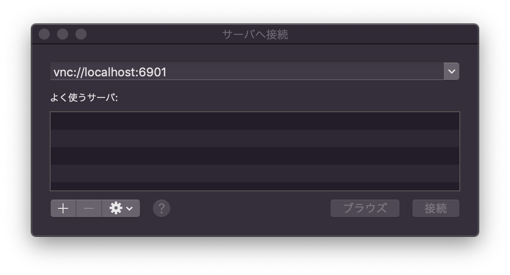
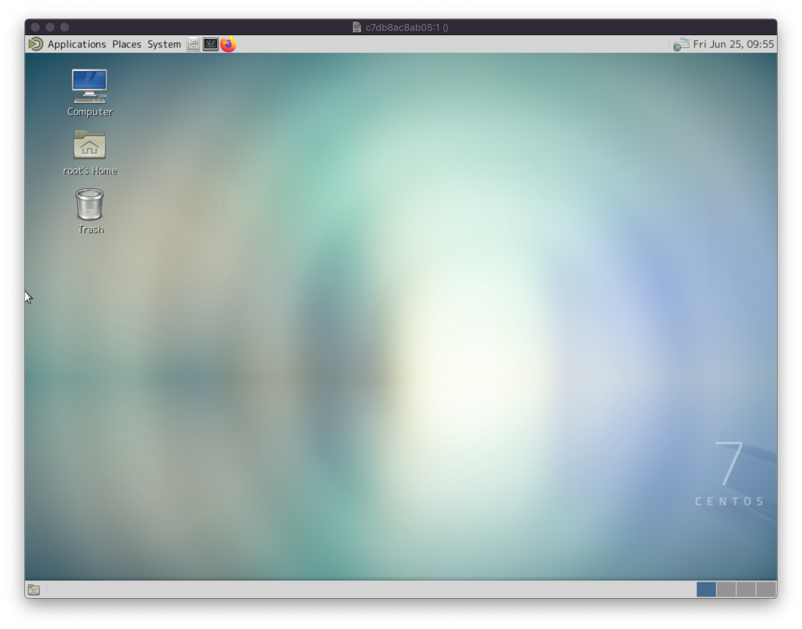

## <div style="border: thin solid; border-radius: 8px; padding: 8px; background: white;"><font color="midnightblue" style="text-transform:none;">Dockerで<br>Linuxデスクトップ元年を<br>はじめよう！😃</font></div> [【タガヤス その21】「クラウドって何？」からAWSの概要まで + 私のこだわり発表会](https://tagayas.connpass.com/event/215023/)(2021/06/25) <!-- <img src="https://pbs.twimg.com/profile_images/2577120213/74t8gdwg96vj93vg46a4_200x200.png" width="40" height="40"> --> [@furandon_pig](https://twitter.com/furandon_pig)
### 自己紹介 <img src="https://pbs.twimg.com/profile_images/2577120213/74t8gdwg96vj93vg46a4_200x200.png" width="80" height="80"> [@furandon_pig](https://twitter.com/furandon_pig) <p> 小さなWebアプリを細々と作っています。 * [ぬりえアプリ](https://furandon-pig.github.io/nurie/) * [Brocco.graph](https://furandon-pig.github.io/fpig_sample/hobby/brocco_graph/) * [ジャンプ作家風 巻末コメントアプリ](https://furandon-pig.github.io/jump_comment_app/) * [セリフ書き込みアプリ](https://furandon-pig.github.io/mmr-kitsune-san/) </p>
### 今日のお話 <font style="font-size:480%">🐳</font>
# Docker。
### Dockerによる開発環境構築 * Dockerfile,Dockerイメージで簡単にアプリ開発環境の構築が可能。 * macOSでもDocker Desktopを利用すればOK。 ```sh $ docker pull centos:7 $ docker images REPOSITORY TAG IMAGE ID CREATED SIZE centos 7 8652b9f0cb4c 7 months ago 204MB $ $ docker run -ti --rm 8652b9f0cb4c bash [root@88dc4ab5eab1 /]# ```
### コンテナの活用 * 特定用途に環境を分けたいですぞ...🤔 * 勉強会での発表用 * インストールしたてのWebブラウザの利用 * GUIアプリをお試して動かしてみる
# 🤔
## VNCを使おう！😃
## VNCとは？ * [Virtual Network Computing](https://ja.wikipedia.org/wiki/Virtual_Network_Computing)の略。 * リモートデスクトップを実現する機能。 * Windowsのリモートデスクトップと似たようなものです。 * コンテナ内でVNCサーバを起動し、ホスト側から接続すれば良さそう。
### Dockerfileを用意する ``` FROM centos:7 LABEL maintainer "furandon_pig" RUN yum update -y \ && yum install -y epel-release \ && yum install -y \ sudo \ git \ vim-minimal \ vim-enhanced \ tigervnc-server \ tigervnc \ mate-desktop \ mate-settings-daemon \ mate-terminal \ mate-themes \ mate-icon-theme \ caja \ mousepad \ ipa-gothic-fonts \ ipa-mincho-fonts \ ipa-pgothic-fonts \ ipa-pmincho-fonts \ vlgothic-fonts \ vlgothic-p-fonts \ sazanami-fonts-common \ ibus-anthy \ screen \ firefox COPY files/passwd /tmp RUN mkdir -p /root/.vnc \ && echo '#!/bin/sh' >> /root/.vnc/xstartup \ && echo 'export LANG=ja_JP.UTF-8' >> /root/.vnc/xstartup \ && echo 'export LC_ALL=$LANG' >> /root/.vnc/xstartup \ && echo 'unset SESSION_MANAGER' >> /root/.vnc/xstartup \ && echo 'unset DBUS_SESSION_BUS_ADDRESS' >> /root/.vnc/xstartup \ && echo 'export GTK_IM_MODULE=ibus' >> /root/.vnc/xstartup \ && echo 'export XMODIFIERS=@im=ibus' >> /root/.vnc/xstartup \ && echo 'export QT_IM_MODULE=ibus' >> /root/.vnc/xstartup \ && echo 'ibus-daemon --daemonize --xim' >> /root/.vnc/xstartup \ && echo 'exec mate-session' >> /root/.vnc/xstartup \ && chmod +x /root/.vnc/xstartup \ && cp /tmp/passwd /root/.vnc/passwd \ && mkdir -p /var/lib/dbus \ && dbus-uuidgen > /var/lib/dbus/machine-id ```
### Dockerイメージのビルド ``` $ docker build -t tagayas-20210625 . $ docker images REPOSITORY TAG IMAGE ID CREATED SIZE tagayas-20210625 latest 62c00f1af4ba 41 seconds ago 967MB centos 7 8652b9f0cb4c 7 months ago 204MB ```
### コンテナを作成する * `--ipc=hose` オプションが重要。 * https://twitter.com/furandon_pig/status/1390509465124835331 ``` $ docker \ run \ -ti \ --rm \ --name tagayas-01 \ -p 6901:5901 \ --ipc=host \ tagayas-20210625 \ bash ```
### あとはVNCサーバを起動するだけ ``` [root@c7db8ac8ab05 /]# vncserver You will require a password to access your desktops. Password: Verify: Would you like to enter a view-only password (y/n)? n ... [root@c7db8ac8ab05 /]# ss -a | grep ^tcp tcp LISTEN 0 128 *:6001 *:* tcp LISTEN 0 5 *:5901 *:* tcp LISTEN 0 128 [::]:6001 [::]:* tcp LISTEN 0 5 [::]:5901 [::]:* ```
### さっそくVNCで接続してみましょう 
#### Linuxデスクトップ画面！😃 
#### 個別にLinuxデスクトップが作成可能！ * vncserver起動後にコンテナからデタッチ。 * VNCポートはコンテナ毎にずらす工夫が必要。 * AWSのEC2+Dockerといった応用も可能。 * VDI(仮想デスクトップ基盤)的な感じ。 * ただしストレージサイズ(デフォルト8GiB？)に注意が必要。 * さくらのVPSを使うのもおススメ。 * 2CPU+1GiBな構成で月額900円くらい。 * (定額なのがポイント😃)。
### まとめ * DockerとVNCを組み合わせてLinuxデスクトップを使う方法を紹介。 * macOSにはVNCクライアント機能が組み込まれているのでラク。 * GUI込みで作業環境を切り出せる。 * FreeBSD JailというDockerと同等の機能を提供するコンテナ機構もあるのでぜひ😃
## ご清聴ありがとうございました😃